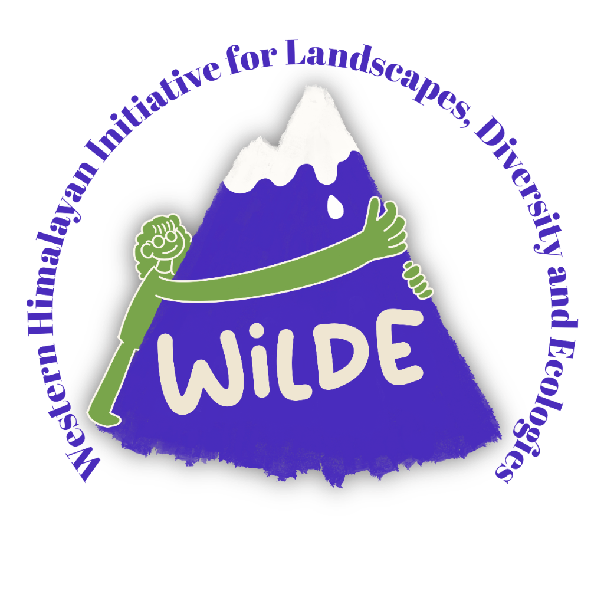

Bridge academic silos
Expose college students from diverse backgrounds (sciences, arts, humanities, and commerce) to cross-disciplinary methodologies like GIS, statistical modeling, science communication, and digital tools.
Interdisciplinary Research for Himalayan Landscapes, Ecologies, and Communities
Registration fee ₹150 · 200 places

About WILDE
For too long, researchers, local communities, farmers, educators, and practitioners in the Western Himalayas have operated in silos—reinventing the wheel, facing parallel struggles, and lacking a unified bridge to share knowledge. When a farmer seeks answers about shifting weather patterns, or when a researcher looks for on-the-ground collaborators outside academia, the pathways are often missing.
WILDE is a collaborative alliance designed to shatter these barriers. We bring together researchers, local stakeholders, students, and grassroots practitioners into a single multi-sector dialogue. Our mission is to co-create sustainable solutions for conservation, agriculture, and livelihood challenges across the Western Himalayan landscape by weaving together traditional wisdom, community lived experiences, and modern scientific research.

Conference aim & goals
To empower the next generation of students and researchers with versatile, interdisciplinary tools and methodologies, fostering a culture of collaborative problem-solving, open science, and holistic landscape stewardship in the Western Himalayas.
Expose college students from diverse backgrounds (sciences, arts, humanities, and commerce) to cross-disciplinary methodologies like GIS, statistical modeling, science communication, and digital tools.
Provide hands-on training through workshops (e.g., QGIS, R-stats, zine-making, and AI literacy) that are broadly applicable across multiple career paths.
Showcase diverse research talks focused on Western Himalayan or Himalayan landscapes so students can see real-world applications of analytical tools in regional conservation and development.
Build an active, supportive network of young scholars and practitioners dedicated to collaborative, community-connected research in Himachal Pradesh, Uttarakhand, Jammu & Kashmir, and Ladakh.
Timeline
Schedule
Switch between Day 1, Day 2, and Workshops. The conference is for registered participants only.
People
Workshop leads for WILDE Student Conference 2026. Photos can be replaced when official portraits are ready.
Registration
One form covers attendance and talk, poster, or workshop submissions. Talk abstracts close 15 October; registration closes 30 October.
Required for all participants. Choose your role in the form. Fee ₹150 · 200 places.
The registration form will be linked on this button.
Guidelines
Interdisciplinary Research for Himalayan Landscapes, Ecologies, and Communities
FAQs
Yes. The conference is for registered participants only. Places are limited to 200 students. Fee ₹150.
Only registered participants. Places are limited to 200 students.
12 minutes for the talk and 5 minutes for Q&A. See talk guidelines.
Maximum 4 ft × 3 ft. Presenters arrange and pay for printing. See poster guidelines.
Organiser
Venue
Organisers